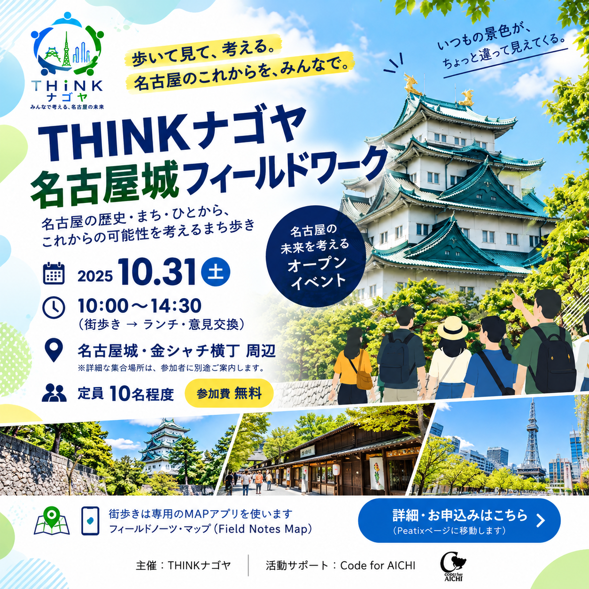

♟
♟勉強会
テクノロジーの便利さを学べる勉強会やツール、アプリの使い方勉強会、オープンデータを活用する勉強会などいろいろな勉強会の企画・運営。
♟テクノロジーの便利さを学べる勉強会やツール、アプリの使い方勉強会、オープンデータを活用する勉強会などいろいろな勉強会の企画・運営。
 ⚒
⚒皆さんが考えたアイデアや課題解決方法などのプロトタイピングを一緒にお手伝いします。課題の深掘りから実証実験まで一緒にお手伝いします。
 •••
•••テックスキル、イベント運営スキルを生かしたオンラインイベントサポートや予算が足りないや急な対応など、どんなことでも相談を受け付けます。
Code for AICHI
キックオフ
シニアプログラミング
ハッカソン@Aichi
Mashup Awards 2018
CIVICTECH部門
決勝出場
IBM CALL FOR CODE
セミファイナリスト
Code for Japan
Summit 2020
企画・運営
GEOSPATIAL Hackers
Program 2020
初学者部門最優秀賞
現在も、
シビックテックで
愛知をもっと良く。

EVENT INFORMATION
「名古屋城フィールドワーク — 歩いて知る『過去・現在・未来』」。歩いて見て考える名古屋の未来をテーマに、名古屋城周辺を巡りながら新しい視点で名古屋を考えるオープンイベントです。
イベント詳細を見る代表
デザイン学校卒業後、飲食店運営、機械エンジニア、基幹システム開発など、多様な業界・職種を経験。2017年にCode for AICHIを立ち上げる。
現在は、これまでに培った幅広い経験と、エンジニアリング・デザインのスキルを活かし、各種プログラムの企画・運営ディレクションをはじめ、オンライン配信、映像制作、Webアプリ開発など、多岐にわたる分野で活動している。
代表
複雑化する社会課題解決を目指し、自治体と企業との連携を促進している元スーパー公務員。2020年4月から「善き前例をともにつくる」を標榜する株式会社官民連携事業研究所にて活躍している。
岡崎市役所勤務時に、プライベートで2016年から商店街の空き店舗を借り「ここdeやるZone」（略称：ここやる）、サードプレイスコミュニティを創出。2017年にCode for AICHI、「シビックテック」を広める活動を開始。【人と人、人と地域をつなげる活動】をとおして仕事でも、プライベートでも枠を超えたつながりで地域活性化に取り組んでいる。
Code for AICHIの活動や参加に関するご質問等ございましたら、お気軽にお問い合わせください。参加に関しては特に制限はございません。Facebook等のイベントをご確認いただきご都合がいい会にご参加ください。
ITスキルなどの制限もございません。社会・地域課題にご興味がございましたら、お気軽にご参加くださいませ。